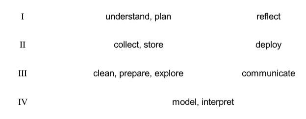

8 The Image of the Pipeline
8.1 A Common Theme
A review of the literature on data science definitions, including sources from the adjacent fields data analysis and data mining, reveals that most invoke the image of a data processing pipeline — a sequence of events through which data flows as it moves from the consumption of so-called raw data to production of useful results. In this view, consumed data may come from a variety of sources, such as databases or intentional experiments or sensors, and results may be equally various, from the visual communication of analytical results to stake-holders to the development of an interactive data product for use on the web.1
For analytic purposes, it is helpful to view the pipeline image as a kind of story, a micronarrative that encodes and socializes an understanding about the practice of data science. All forms of work involve the sharing of stories in one form or another, both formally in the context of education and informally through the countless acts of training, mentorship, and imitation that go on everyday in the academy and the workplace. When we want to explain to a trainee, a peer, or a supervisor how something is done, we often resort to a story that is general enough to apply to a variety of contexts yet specific enough to be translatable into action. The data processing pipeline is like that, and the essays in which it appears are part of the ongoing discourse by which a community of practice grows and learns.
By thinking of the pipeline as a story we can analyze it with techniques developed by sociolinguists, folklorists, and students of literature to study how stories are structured and how they function socially and cognitively. One idea from this field is that stories can be broken down into elementary units, or “event functions,” and that these functions tend to have an invariant order within specific traditions (Propp and Dundes 1977). In addition, a given sequence of functions may exhibit overall patterns, such as a chiasmus structure, in which the functions at the beginning of a story mirror those a the end (Lévi-Strauss 1955). The following analysis applies these ideas.
8.2 The Primary Standard Sequence
An analysis of a representative sample of essays that define a data processing pipeline shows that the various pipeline stories consist of elements drawn from a primary standard sequence of about twelve elements, give or take a few depending on how one might expand or contract terms. These are listed and defined below by a core set of event types, with the understanding that many synonyms are employed in the examples.
- Understand. The work of developing a question that the acquisition and analysis of data can answer. Questions may range from the status of a scientific hypothesis the merit of a business value proposition. More broadly, this is the stage of framing and scoping the work that follows.
- Plan. The work of designing an experiment to produce data or of devising a strategy to acquire existing data relevant to the goals specified by the Understand phase.
- Collect. The work of producing or acquiring data. This covers a broad range of activities from taking surveys to generating signal data to harvesting data from databases to scraping websites.
- Store. The work of moving data from its collected state to a persistent store to house the data. This may be a file system or a database.
- Clean. The work of fixing problems with data as collected and stored. This covers a wide range of activities, including the normalizing the data formats (such as dates) to the handling of missing data to the transformation of tables into some level of normal form.
- Explore. The work of investigating cleaned data for general patterns, distributions, simple clusters, outliers, sanity, etc. Exploratory data analysis provides a useful set of tools and perspectives for this work. In some models, this activity is expanded into more sophisticated forms of pattern discovery and becomes associated more directly with the Model phase. Visualization using tools such as box plots, scatter plots, histograms, etc. play a large role here.
- Prepare. The work of transforming data into a form suitable for the particular methods planned in the Model phase. This may mean generating tidy tables for statistical analysis, wide-format data for matrix operations, one-hot encoded feature spaces for input into deep learning systems, or graph structured data for network analysis. Also included here is feature engineering and dimensionality reduction.
- Model. The work of using data to train models or estimate parameters for the tasks of prediction, inference, etc. Internally, this phase comprises a sub-pipeline that operates closely with the previous and following steps and involves model selection, parameter tuning, validation, and testing. Additionally, this area is characterized by general approach, which may be based in classification (predictive modeling), inference, or simulation.
- Interpret. The work of making sense of the results of modeling the data, in terms of the terms set out by the Understand phase. This may mean making claims about causality, assigning real-world correlates to discovered patterns, or assessing the generalizability of a classifier.
- Communicate. The work of representing data, model, and results to stakeholders as defined or implied by the Understand phase. The includes the work of visualization broadly conceived, from the creation on interactive visualizations to static infographics. It also includes story-telling and essay writing for both specialized and generalized audiences.
- Deploy. If the work results in a data product, such as real-time classifier to support a business process, this means standing up and maintaining the software product in a performant and scalable hardware environment.
- Reflect. Between iterations of the pipeline, this is the work of reflecting on the strategic or philosophical significance of the work conducted. It also includes the ethical dimension of the work conducted.
Note that the descriptions are not meant to be prescriptive; they are attempts at summarizing the descriptions found in the literature. With this composite view in place, it will be easier to address limitations and fill gaps in our effort to create an authentic definition of data science.
No one definition includes them all, but some are more comprehensive than others, and different disciplines emphasize different parts.
For example, Hayashi’s statistically-oriented definition of data science includes just three phases — design \([1]\), collect \([3]\), and analyze \([8, 9]\) — with an emphasis on the experimental design phase in which data are actually produced through thoughtfully designed experiments (Hayashi 1998).
Mason and Wiggins propose five — obtain \([3, 4]\), scrub \([5]\), explore \([6]\), model \([8]\), and interpret \([9]\) — which highlights two conditions that define industrial data science, the simultaneous availability of data (one obtains it, say through web scraping) and their poor condition relative to analysis, i.e. the need to scrub and wrangle them into usable form (Mason and Wiggins 2010).
The CRISP-DM model is the most comprehensive, with seven phases defined (if we include the unnamed but visually depicted function of storage), emphasizing the importance of understanding both the business proposition and data before anything is done with it (Wirth and Hipp 1999). It also modifies the metaphor of the pipeline, representing it as a circular and iterative process. However, unlike Donoho’s similarly comprehensive sequence (implied by the ordering of his six divisions of “greater data science”), it does not include a “meta” phase devoted to reflecting on the process as a whole (Donoho 2017).
As the CRISP-DM model shows, in some cases the pipeline is described as a circular process, where the output of one cycle serves as input to the next. Nevertheless, in these cases the sequential order of processing stages is maintained. Moreover, the image of the circle makes explicit what is implicit in the non-circular models, namely that the pipeline is never a one-off operation but repeated many times in the life-cycle of a project. What the circular models uniquely introduce is the idea that data processing is often a cybernetic process, a feedback loop where the results of one cycle inform the next. However, it should be noted that the idea of feedback foregrounded by circular models is not well developed. We shall see that the relationship between the endpoints is an area deserving of further research and theoretical development.
8.3 Seven Chapters
A close look at the twelve phases listed above shows that a given phase may be more closely related to some phases than to others — in other words, the phases can be grouped thematically. For example, it seems clear that the Understand and Plan phases go together, just as Clean, Explore, and Prepare do. They belong together because we can imagine performing their associated activities together, and separately from the other phases. Also, in some cases the order of the phases within the group may change — for example, explore might precede cleaning in the event, as the two are often performed simultaneously — while the sequential order of the groups is less likely to vary. Finally, we can imagine assigning different teams to perform the labor in each thematic grouping, by virtue of the expertise required to carry them out.
Given this, the twelve-part composite pipeline can be reduced to seven groups:
\(A\) understand and plan
\(B\) collect and store
\(C\) clean, explore, and prepare
\(D\) model and interpret
\(E\) communicate
\(F\) deploy
\(G\) reflect
Each of these thematic groups may be considered a “chapter” in the story. Note that the number of verbs in each chapter title does not necessarily predict the length of its content. For example, the chapter on “model and interpret” covers a wide range of activities from a variety of perspectives, including classical statistics, machine learning, and computational simulation. It’s a big and complicated chapter with its own pipeline, but it is just one chapter among seven.
8.4 An Arc with Four Zones

To be sure, the middle chapter plays a central role in our story. If we think of the story as following a classical “there and back again” structure — a chiasmus pattern like \(X_1, Y_1, Z, Y_2, X_2\) — then chapter \(D\) is the pivot, while chapters \(A,\) \(B,\) and \(C\) mirror \(E,\) \(F,\) and \(G\). Thinking of the story in this way allows us to identify a parallel structure in the pipeline, connecting phases that are usually seen as separate. Specifically, we may visualize the pipeline as an arc, a U-shaped process in which chapters in the first half of the pipeline mirror the those of the second half. We may then group chapters by the pairs formed in this way, yielding four zones — \(A\) and \(G\) belong to zone \(I\), \(B\) and \(F\) to \(II\), \(C\) and \(E\) to \(III\), and \(D\) to \(IV\) — as in the following diagram:

With this visualization, we can discern some interesting properties about the data science pipeline that are not obvious in the original sequential image. For one, the arc structure suggests that the two ends of the pipe are not separate; both make direct contact with the external world (relative to the internal world of the pipeline considered as a system). The external world — natural or social — from which data are pulled is the same world into which data products are inserted. This insight echoes the CRISP-DM model, which connects \(A\) and \(G\) (actually \(F\)), except that the two ends of the arc model are not directly connected. Instead, they come into contact with — and are separated by — the world in all of its complexity and unpredictability. The relationship between the effects caused by our data products \(G\) and the data we pull from the world \(A\) is not given but a matter of discovery — and often surprise. This is an important distinction between the model being proposed here and the simple idea that the pipeline forms a closed circle.
8.5 Interpreting the Themes
At this point, we can explore the unifying themes associated with the four zones in our arc model by transposing the preceding visualization, which draws attention to what is common to each pairing. This generates four candidate areas of data science expertise — activities that, although they appear on opposite ends of the pipeline, nevertheless share basic knowledge, know-how, and areas of concern.
Zone \(IV\) is the easiest to interpret in this way because as the pivot of the arc it is not paired. It represents the work of modeling a problem mathematically, as well as evaluating and interpreting the results of mathematical modeling. This work requires data to be available in a particular form — clean and organized, usually as “tidy” analytical tables — and it produces results that need to be prepared for consumption by non-specialists. As stated above, it is the pivot of the arc, the core process, where the prior phases constitute pre-processing and following phases post-processing.
Zone \(I\) is also relatively easy to interpret: the functions in this group each involve understanding the relationship between the pipeline and the external world, the messy interface between the enterprise of data science and the variety of real world situations in which it operates and impacts. Again, this relationship has a dual character, based on the difference between input and output, reading from and writing to the world. Note also that there is an open-ended quality to the this relationship that is elided by circular representations — there is always a knowledge gap between one’s understanding of a data product and its real effects on the world, effects which may in turn influence source data.
We may note in passing that \(I\) and \(IV\) can be contrasted in several ways — external vs internal, messy vs clean, exoteric vs esoteric, qualitative vs quantitative, existential vs essential, concrete vs abstract, periphery vs center, etc.
When it comes to zones \(II\) and \(III\), the interpretation of results is less straightforward. This is because the reality of the kind of work performed in these areas is not as clear-cut as it is for \(I\) and \(IV\). Both \(II\) and \(III\) exhibit an internal complexity not found in the others, and the two are less clearly separable from each other than they are from the other two. One reason for this complexity is that here pure and applied forms of knowledge intermingle in ways that defy easy description from an academic perspective.
For example, the work of “data wrangling,” often considered essential to data science, spans the two domains and involves a complex mixture of specific technological know-how and general scientific principles. It turns out that the relationship between these kinds of knowledge is highly contested, as evidenced by the reception of Donoho’s “50 Years of Data Science,” which has been criticized for separating science from engineering and demoting the importance of the latter (Donoho 2017). Regardless of the validity of this criticism, there is without doubt a long-standing conflict between computational data mining and statistical data analysis over what counts as valid forms of knowledge, and this conflict emerges in the representation of zones \(II\) and \(III\) we find in our corpus.
We can take the conflict of interpretations over the status of technical knowledge in data science as a clue and use it to identify two broad dimensions that cross-cut the functions in zones \(II\) and $III$: technical know-how and abstract representation. We can reassign our labels to these dimensions, using the prime notation of \(II'\) and \(III'\) to indicate that they are transformation of our original themes.
Technical know-how \(II´\) involves expertise in developing and deploying software and hardware designed to handle data at scale, including high-performance computing, big data architectures (such as Hadoop and its descendants), and data-oriented programming languages and libraries. The topics associated with \(II'\) are highly specific and change rapidly relative to other forms of knowledge, and so are often omitted from, or under-represented in, academic curricula, even though to many they are the sine qua non of data science.
Abstract representation \(III´\), on the other hand, involves expertise in areas ranging from how data are to be modeled for capture and analysis to how the results of analyses are to be presented to non-expert decision-makers. These areas of knowledge strive for formal generality over the long run; they are often expressed as grammars or design languages, frequently with visual modes (such as entity-relationship models and unified modeling language UML). They also include other forms of visualization, such as the plots developed for exploratory data analysis, such as box plots, and those used to represent statistical facts and analytical results in dashboards and infographics.
8.6 The Four Areas, Plus One
We are now ready to define and name the areas of data science expertise that emerge from an analysis of the pipeline considered as an arc. In each case, we want to identify the common context shared by the paired activities in each zone as well as the tension that exists between them by virtue of their occupying opposite sides of the pipeline. In many cases, although we can identify a shared theme in each zone’s work, the reality is that practitioners do not always interact or share disciplinary homes. One of the benefits of this model will be to identify these points of synergy and to identify new disciplinary boundaries.
Area I: Value
The area of value is defined by the relationship of data science to the world from which it draws data and into which it inserts data products. More broadly, it concerns the primary motivations of data science — why do we practice data science in the first place? It combines the traditional discipline of ethics with the professional activities of business planning, policy making, developing motivations for scientific research, and other activities that have a direct impact on people and the planet. This is the area where we determine what we do versus what we do not do, in order to maximize societal and environmental benefit and minimize harm. It is also the area that looks inward to the other data science areas and provides guidance on such issues as algorithmic bias or open science. Common activities include the forming of value propositions that initiate data science projects, research into how data is created and used “in the wild,” understanding the ethics of data acquisition, manipulation, communication, and sharing, and the application of data products in the world.
Area II´: Design
The area of design is defined by the relationship between human and machine forms of representation. This relationship is bidirectional: human-generated data flowing into the pipeline must be represented for machine consumption (H2M, or \(H \rightarrow M\)), while analytically transformed data going out must be represented for human consumption (M2H, or \(M \rightarrow H\)). This area therefore includes expertise in human-machine interaction as it appears at the points of both consuming data and producing data products. Activities here include the representation and communication of captured data for the work of analytics, e.g. in database modeling, the curation of data, and of complex data and analytical results to humans to drive decision-making and influence behavior. It also includes the making of things, with purpose (i.e. to solve problems) and intent (meaning, concision, focus). A key part of the area is the broad practice of what is often called visualization, the translation of complex quantitative information into visual (and other sensory) forms that non-experts can understand. In slightly more technical terms, the area of design focuses on what Zuboff called “informating,” the process by which the world is represented for computation and analytics, and also by which analytical models and results are represented to the world (Zuboff 1995). These two processes often produce competing representations — a private one of the world for the data scientist, and a public one for the world of the results of analytics. One task of this area is to reconcile these two representations.
Area III´: Systems
The area of systems is defined by the technological infrastructure that is common to the pipeline but concentrated in the activities of wrangling data, deploying data products, and building out systems to support these activities at scale. This area includes expertise in infrastructure systems and architectures to support working with big data — big in terms of volume, velocity, and variety — and building high performance systems in both development and production environments. It includes the broad areas of hardware and software as such — computer technology as opposed to computer science. Key activities include developing cloud resources, building performant pipelines to ingest and aggregate data, developing networks of resilient distributed data, and writing and using software to accomplish tasks. This area is often referred to as “data engineering” or “machine learning engineering,” which, according to Owen, “is most of what Data Science is and Statistics is not” (Owen 2015).
Area IV: Analytics
The area of analytics is defined by the practice of mathematical modeling based on data. This area includes what many consider to be the essence of data science, the combination of statistical methods with machine learning, along with information theory, optimization, network analysis, complexity theory, simulations, and other rigorous quantitative methods from a variety of fields. Although unified by a broad commitment to advanced mathematical models and computational algorithms, in reality this is a heterogeneous collection of competing schools and methods. Tensions include inference vs prediction, parametric vs non-parametric (kernel-based) methods, frequentist vs Bayesian statistics, analytic vs algorithmic solutions (including simulations), etc. Key activities include clustering, pattern recognition, regression, rule mining, feature engineering, model selection, performance evaluation, and a host of other activities. Although currently dominated by statistical methods, this area also includes the rule-based methods that dominated the field of artificial intelligence before the more recent successes of statistical learning and deep learning.
Area V: Practice
The preceding four areas each represent areas of foundational knowledge, forms of expertise that can be taught as more or less separate subjects. In practice, however, these areas represent the interlocking parts of a division of labor that are integrated in the pipeline. This area consists of actual activities that brings people together to combine expertise from each of the four areas. It is characterized by data science teams working together and with external parties to develop solutions and projects that are responsible, authentic, efficient, and effective. Practice is also where the core areas of data science come into contact with a broad spectrum of domain knowledge and real world problems. The following diagram shows the central, integrative role played by practice:

8.7 Two Principal Components
Is there a way to understand how the four primary areas are related to each other, beyond their being composed of functions from the same pipeline? Put another way, does the pipeline-as-arc model exhibit any structural features that will help us conceptualize the broader space of data science? Two such features stand out: (1) the opposition between concrete and abstract forms of representation, and (2) between human and machine processing.
Regarding the concrete and the abstract, it’s clear that the arc model has a metric quality to it: as one moves toward the pivot point of analysis, one moves away from the concrete messiness of reality as experienced to the “tidy” and abstract world of mathematics; similarly, as one moves from the pivot back to the world, there is a requirement to convert esoteric results into more humanly intelligible forms, often through a process of concretization; visualizations succeed by employing concrete metaphors that flesh out mathematical ideas that are notoriously detached from the imagination — no one can imagine, for example, n-dimensional spaces beyond a handful of dimensions. The arc describes a dialectic of abstraction and concretization that defines the ebb and flow and data science work.
| Concrete | Abstract | |
|---|---|---|
| Human | I VALUE |
II’ DESIGN |
| Machine | III’ SYSTEMS |
IV ANALYTICS |
The Four Areas in Two Dimensions
The dimension of human and machine processing exhibits a similar duality, that between the conversion of information from humanly accessible forms, such as given by data acquired by instruments, into machine readable and processible forms, and the reverse. The process of moving from human to machine representations is a large part of what data capture, modeling, and wrangling is all about, while the process of converting the results of machine learning, broadly conceived, into humanly actionable form is what visualization and productization are all about. The reality of this dualism is captured by the concept of human-computer interaction (HCI), an established field that is applicable to both sides of the arc.
How do the four fundamental areas map onto these two dimensions? We can define each area as a combination of one pole from each duality; the four areas result from all possible permutations of the two dimensions. This produces the following high level characterizations of each area: (1) Value is concerned with concrete humanity, (2) Design with abstract humanity, (3) Analytics with abstract machinery, and (4) Systems is concerned with concrete machinery. All of these make intuitive sense, with the exception of Design. This is consistent, however, with the fact that the area of Design emerges from this analysis as an undervalued and not well understood area of expertise, even though Yau emphasized it early on (Yau 2009b). Indeed, one of the consequences of this analysis is to train our attention on this area of knowledge and to develop it further.
One exciting interpretation of the two dimensions defined here is that they correspond to two principal components that undergird the general field of data science. As components, these axes define two orthogonal dimensions within which all the specific topics of data science may, in principle, be plotted. The reality behind these axes may be that they represent cognitive styles associated with the division of labor implied by the data science pipeline.
PC1: Human versus Machine
The human-machine axis accounts for the most variance in the field. This seems evident from the fact that Conway’s Venn diagram model of data science represents only the machine side of our model, with practice replaced by “substantive expertise” (Conway 2010). The human side — Value and Design — is left out, or short-changed by being lumped in with domain knowledge. The very fact that the human side has to be explained and added to the model suggests strongly that it defines a pole at some distance from the areas of knowledge described in Conway’s model. The human pole refers to humanity understood as situated in their historical, social, and cultural milieu. It is synonymous with human experience. The machine pole refers to the technoscientific apparatus of formal, quantitative reasoning that operates on representations of the human and the world. In the context of data science, it is more or less synonymous with machine intelligence, broadly conceived to include machine learning but also other modes of analysis on the spectrum of prediction and inference. Given these poles, the human-machine axis represents the opposition between humanistic disciplines that seek to understand human experience as such, and the formal sciences that employ machine intelligence, broadly conceived, to interpret that experience as represented and aggregated in the form of data.
PC2: Concrete versus Abstract
The abstract-concrete axis accounts for the difference between two forms of knowledge, roughly between direct experience and the indirect representation of that experience enabled through data. Both the realm of Value and Systems involve immersion in the messy details of lived experience — and direct acquaintance with the devils in those details. This is the messy world of hacks and ironies. The realms of Design and Analysis, on the other hand, are founded on abstract representations that strive for clear and distinct purity, and which allow for deductive reasoning to succeed at the cost of simplifying assumptions and reduced representations. This is the orderly world of models. The concrete pole refers to situated knowledge, knowledge as understood by hackers and makers, but also ethnographers who seek to maximize thick description in their work. It represents concrete materiality. The abstract pole refers to formal knowledge, knowledge in the form of mathematical symbolism, deductive proofs, and algorithmic patterns. It is abstract form. Given these poles, the concrete-abstract axis is roughly the opposition between applied and pure forms of knowledge, between those that embrace materiality and those that seek purity of form.
8.8 Final Representation
The result of the preceding may be represented by the following graphic.

This visualization represents data science as composed of specific and complementary forms of knowledge. The vertical axis defines the dominant polarity between analysis — the how of data science, often identified entirely with it, contrasted with the why of data science, from which data science derives its meaning and value as a profession. The horizontal access defines the polarity of methods that are often obscured in academic definitions of data science — the supporting practices that make the Analytics component work in the first place.